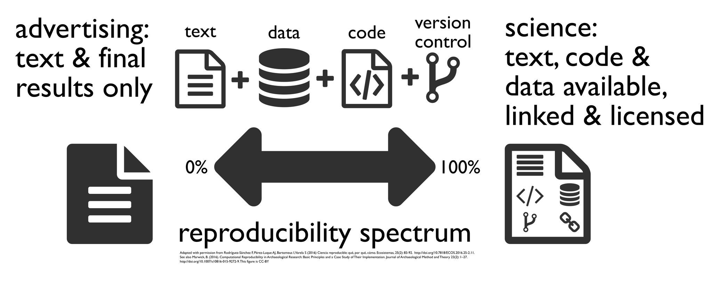

Welcome to SISMID Workshop: Introduction to R
Welcome to SISMID Workshop: Introduction to R!
Alex Edwards ()
Email: awinter@uga.edu
Zane Billings (he/him)
PhD Candidate, Department of Epidemiology and Biostatistics
Email: Wesley.Billings@uga.edu
Introductions
- Name?
- Current position / institution?
- Other intro questions
Course website
- All of the materials for this course can be found online here: here.
- This contains the schedule, course resources, and online versions of all of our slide decks.
- The Course Resources page contains download links for all of the data, exercises, and slides for this class.
- Please feel free to download these resources and share them – all of the course content is under the Creative Commons BY-NC 4.0 license.
What is R?
R is a language and environment for statistical computing and graphics developed in 1991
R is the open source implementation of the S language, which was developed by Bell laboratories in the 70s.
The aim of the S language, as expressed by John Chambers, is “to turn ideas into software, quickly and faithfully”
What is R?

What is R?
- R possesses an extensive catalog of statistical and graphical methods
- includes machine learning algorithm, linear regression, time series, statistical inference to name a few.
- Data analysis with R is done in a series of steps; programming, transforming, discovering, modeling and communicate the results
What is R?
- Program: R is a clear and accessible programming tool
- Transform: R is made up of a collection of packages/libraries designed specifically for statistical computing
- Discover: Investigate the data, refine your hypothesis and analyze them
- Model: R provides a wide array of tools to capture the right model for your data
- Communicate: Integrate codes, graphs, and outputs to a report with R Markdown or build Shiny apps to share with the world
Why R?
Free (open source)
High level language designed for statistical computing
Powerful and flexible - especially for data wrangling and visualization
Extensive add-on software (packages)
Strong community
Why not R?
Little centralized support, relies on online community and package developers
Annoying to update
Slower, and more memory intensive, than the more traditional programming languages (C, Perl, Python)
Is R Difficult?
- Short answer – It has a steep learning curve, like all programming languages
- Years ago, R was a difficult language to master.
- Hadley Wickham developed a collection of packages called tidyverse. Data manipulation became trivial and intuitive. Creating a graph was not so difficult anymore.
This workshop differs from “Introduction to Tidyverse”
We will focus this class on using Base R functions and packages, i.e., pre-installed into R and the basis for most other functions and packages! If you know Base R then are will be more equipped to use all the other useful/pretty packages that exit.
The Tidyverse is one set of useful/pretty sets of packages, designed to can make your code more intuitive as compared to the original older Base R. Tidyverse advantages:
- consistent structure - making it easier to learn how to use different packages
- particularly good for wrangling (manipulating, cleaning, joining) data
- more flexible for visualizing data

Workshop Overview
14 lecture blocks that will each:
- Start with learning objectives
- End with summary slides
- Include mini-exercise(s) or a full exercise
Themes that will show up throughout the workshop:
Reproducibility
- Reproducible research: the idea that other people should be able to verify the claims you make – usually by being able to see your data and run your code.

- 2023 was the US government’s year of open science – specific aspects of reproducibility will be mandated for federally funded research!
- Sharing and documenting your code is a massive step towards making your work reproducible, and the R ecosystem can play a big role in that!
Useful (+ Free) Resources
Want more?
R for Data Science: http://r4ds.had.co.nz/
(great general information)
Fundamentals of Data Visualization: https://clauswilke.com/dataviz/
R for Epidemiology: https://www.r4epi.com/
The Epidemiologist R Handbook: https://epirhandbook.com/en/
R basics by Rafael A. Irizarry: https://rafalab.github.io/dsbook/r-basics.html (great general information)
Open Case Studies: https://www.opencasestudies.org/
(resource for specific public health cases with statistical implementation and interpretation)
Useful (+Free) Resources
Need help?
Various “Cheat Sheets”: https://github.com/rstudio/cheatsheets/
R reference card: http://cran.r-project.org/doc/contrib/Short-refcard.pdf
R jargon: https://link.springer.com/content/pdf/bbm%3A978-1-4419-1318-0%2F1.pdf
R vs Stata: https://link.springer.com/content/pdf/bbm%3A978-1-4419-1318-0%2F1.pdf
R terminology: https://cran.r-project.org/doc/manuals/r-release/R-lang.pdf
Installing R
Hopefully everyone has pre-installed R and RStudio. We will take a moment to go around and make sure everyone is ready to go. Please open up your RStudio and leave it open as we check everyone’s laptops.